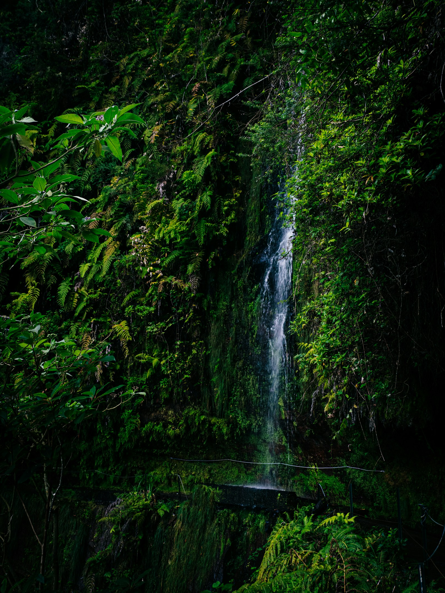
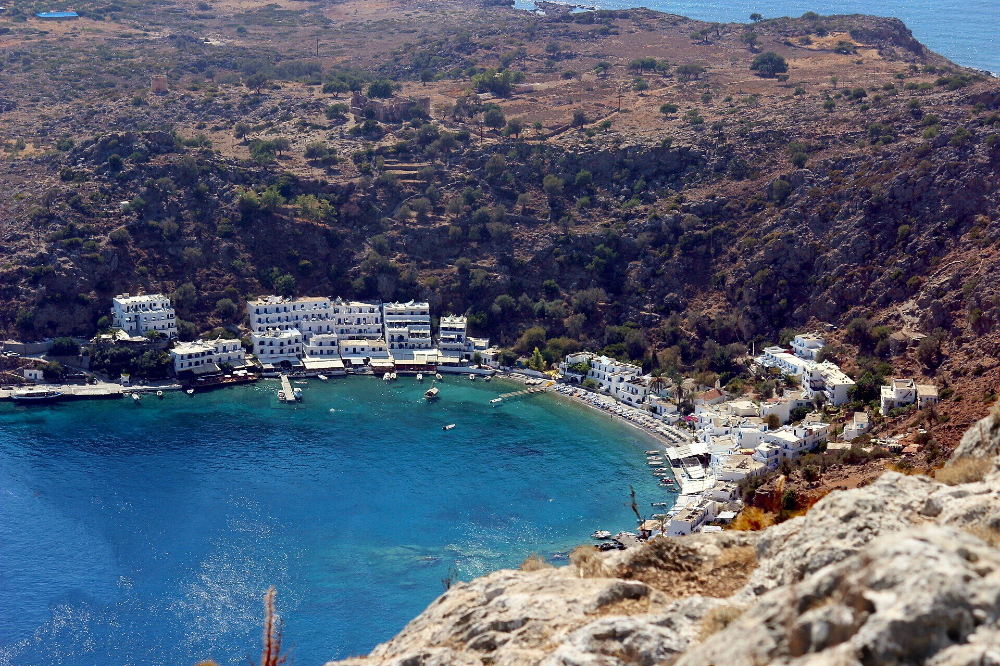
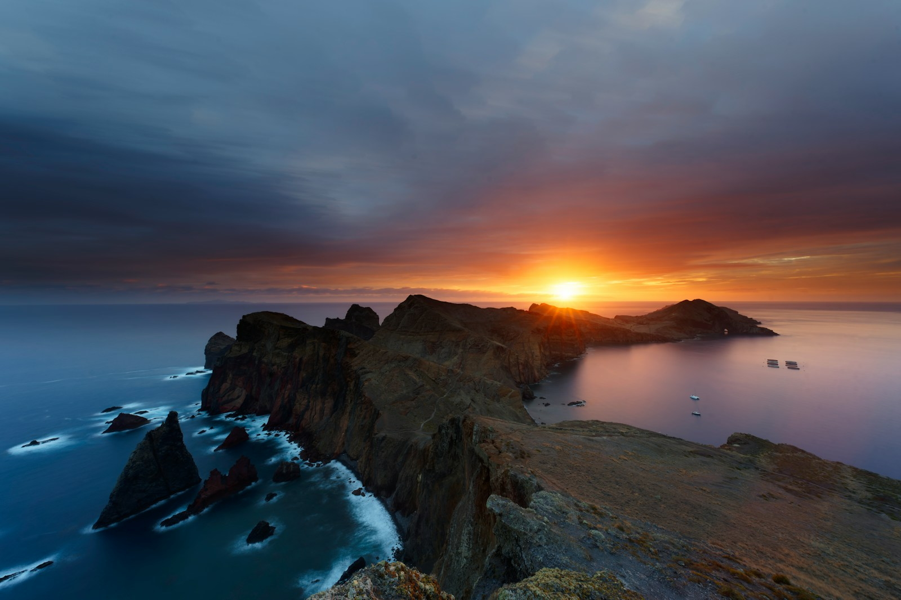
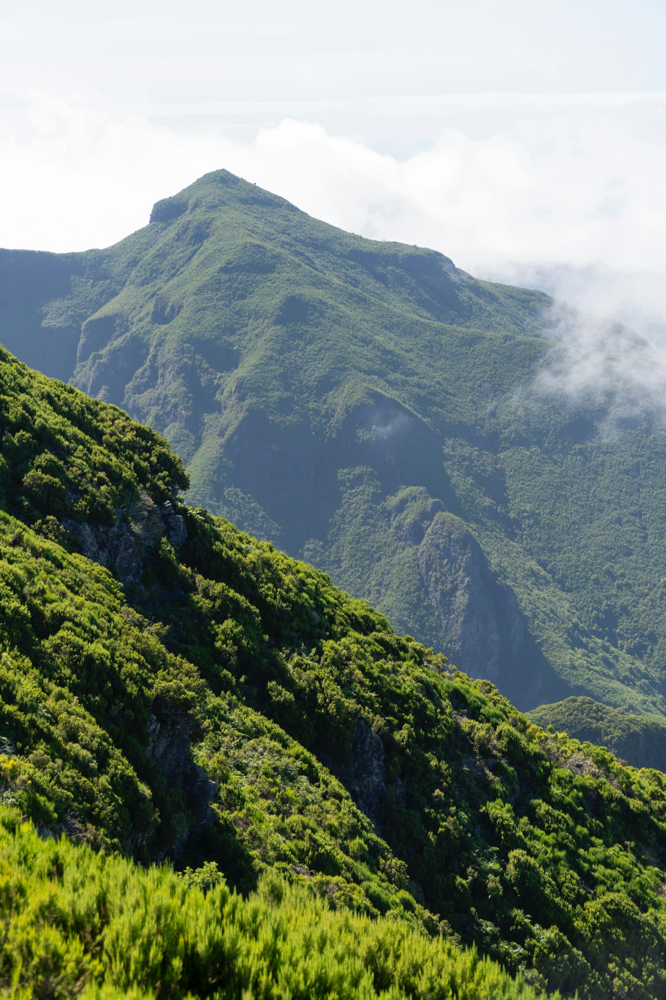
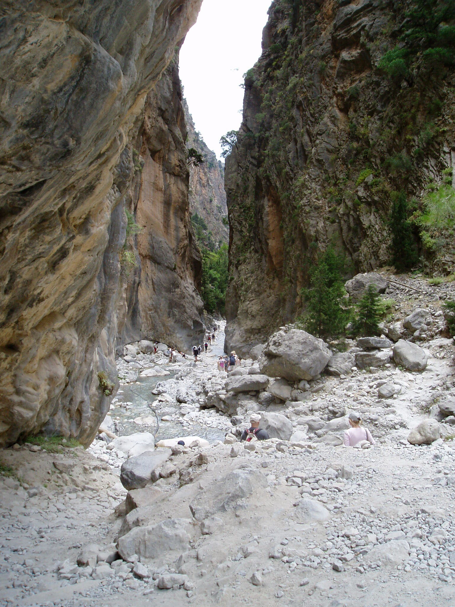

Båda resorna levererar kust, berg och bra mat. Den avgörande skillnaden är
formen: Madeira är tre noga valda dagsturer. Kreta är en sammanhängande
berättelse som bara kan göras till fots.

01
MADEIRAS USP
Tre naturvärldar utan att flytta väskan.
Karg vulkankust, uråldrig laurisilva och dramatiska toppryggar — med
Funchal som samma enkla bas varje kväll.
vulkankust→laurisilva→toppryggar
Unikt värde: maximal naturvariation med minimal
logistik och frihet att byta dag efter väder.

02NYTT ALTERNATIV
KRETAS USP
Berg till hav genom väglöst land.
På fyra dagar går ni från ett nästan månlikt högfjäll, genom en
monumental ravin och vidare längs en kust där byarna saknar
vägförbindelse.
stenöken→ravin→Libyska havet
Unikt värde: resans största scenbyte i en enda obruten
rutt — med säng och taverna varje kväll samt havsbad under kustdagarna.
Skillnader mellan vandringsresorna till Madeira och Kreta
Kriterium
01 · Madeira
02 · Kreta
Resans form
Tre dagsturer från Funchal.
En punkt-till-punkt-rutt med ny nattplats.
Dramaturgi
Tre separata akter som kan möbleras om.
En obruten rörelse: 1 680 meter → havet.
Vildmarkskänsla
Dramatiskt men lättillgängligt; transfer varje dag.
Cirka 48 timmar utan genomgående väg.
Vädertålighet
Byt ordning på dagarna när molnen ligger fel.
Samaria, Kallergi och kustleden måste fungera i rätt ordning.
Komfort
Samma säng, dusch och restaurangkvarter varje kväll.
Ny säng varje kväll, men aldrig tält eller frystorkat.
Fysisk profil
34 km på tre dagar, mest med dagryggsäck.
Cirka 48 km på fyra dagar, lång utförsdag och lätt flerdagarspackning.
Folkmängd
Populära klassiker; starttider och väder styr trycket.
Samaria är välbesökt mitt på dagen; kustleden nästa morgon är glest
trafikerad.
Badet
Ett möjligt tillägg efter kustdagen.
En del av själva rutten: Agia Roumeli, Marmara och Loutro.
Budget för två
Cirka 13 600–17 800 kr.
Cirka 7 700–12 100 kr.
Flyg
Praktiskt alternativ via Lissabon.
ARN–Chania trafikeras direkt, cirka fyra timmar.
VÄLJ MADEIRA OM
ni vill maximera upplevelse och minimera friktion.
Samma boende varje kväll känns som en fördel.
Ni vill kunna byta vandringsdag efter moln och vind.
En tung 21-kilometersdag med packning lockar mindre.
Originalplanen står kvar: tre dagsturer från Funchal som medvetet inte
upprepar varandra. Den fulla guiden innehåller boenden, restauranger,
reservleder och bokningslänkar.
30 SEP
ankomst
Stockholm → Funchal
via Lissabon · sen ankomst
Ordna självincheckning och använd Funchal som bas alla fyra nätter.
01 OKT
kust
PR8 · Ponta de São Lourenço
6 km · 2,5–3 tim
Vind, vulkaniska färger och fri Atlantutsikt som mjuk öppning.
02 OKT
skog
PR9 · Caldeirão Verde
17,4 km · 5,5–6,5 tim
Laurisilva, fyra tunnlar och vattenfallet i den gröna kitteln.
03 OKT
högfjäll
PR1 · Areeiro–Ruivo
10,5 km · cirka 5 tim
Final över Madeiras högsta ryggar, med transfer i båda ändar.
04 OKT
hem
Tidig hemresa
Funchal → Stockholm
Taxi till flygplatsen och sammanhängande biljett via Lissabon.

01 · KUSTEN02 · SKOGEN

03 · TOPPARNA01
LOGISTIKVINSTEN
Packa upp en gång.
Funchal ger restauranger, självincheckning och upphämtning till alla tre
lederna. Det är resans största bekvämlighetsfördel.
02
VÄDERVINSTEN
Flytta dagarna, inte er.
Kustsol säger inget om sikten på PR1. Från en bas kan ni lägga högfjället
på den klaraste dagen.
03
BUDGET FÖR TVÅ
13 600–17 800 kr.
Flyget driver skillnaden. Boendet är billigt, men tre separata
ledtransporter och anslutningsflyg kostar.
BEHÅLLT FRÅN ORIGINALSIDAN
Alla Madeira-detaljer finns kvar.
Boendealternativ, restauranger, reservleder, flygtider, ledavgifter och
bokningsordning ligger i den kompletta originalguiden.
På fyra dagar kan ni gå från ett kalt, nästan månlikt högfjäll på 1 700
meter, genom en 300 meter djup ravin och sedan fortsätta längs en kust där
byarna saknar vägförbindelse.
Det finns högre, vildare och spetsigare berg på andra håll. Kretas styrka är
kombinationen: en riktig genomvandring där ni ändå får varm säng och middag
varje kväll, plus havsbad under kustetapperna.
ALBANIENvildare & mer alpint
KNOYDARTtommare & råare vildmark
KRETAstörst variation + säng, taverna & bad
01 · HÖGFJÄLLET

02 · RAVINEN03 · HAVET
DEN RÄTTA FYRANÄTTERSRUTTEN
47,7 kilometer från bergsstuga till badvik.
Rutten använder samma resdagar som Madeira-alternativet. Skillnaden är att
ni fortsätter framåt varje morgon och låter landskapet byta karaktär runt
er.
30 SEP
ankomst · natt 1
Direktflyg Stockholm–Chania
ARN → CHQ · cirka 4 tim
Landning, lätt middag och hostel i Chania. Lämna onödigt bagage här.
01 OKT
dag 1 · natt 2
Omalos → Kallergi Refuge
5 km · 1,5–2 tim · 1 680 m
Buss till Omalos, upp till stugan och en eftermiddagstur på den karga
högplatån. Sov över trädgränsen.
02 OKT
dag 2 · natt 3
Kallergi → Samaria → Agia Roumeli
cirka 21 km · lång utförsdag · −1 680 m
Fem kilometer ned till Xyloskalo, sedan hela Samariaravinen till havet.
När eftermiddagsfärjan går stannar ni kvar.
03 OKT
dag 3 · natt 4
Agia Roumeli → Loutro
14,7 km · cirka 6 tim · E4
Väglös kust via Agios Pavlos och Marmarastranden. Badpaus, taverna och
ankomst till Loutros vita vik.
04 OKT
dag 4 · hem
Loutro → Chora Sfakion
cirka 7 km · 2–2,5 tim
Morgonvandring via Glyka Nera, buss till Chania och flyg hem. Färjan
finns som reserv om tid eller väder spricker.
DEN VIKTIGA ÄRLIGHETEN
Samaria är inte folktom.
Ravinen är Kretas mest kända vandring och mitt på dagen möter ni många
andra. Planens trick är inte att låtsas något annat — utan att använda
dygnsrytmen bättre än dagsutflykterna.
01
Starta från Kallergi.
Ni är redan på berget och kan ligga före de första bussgrupperna.
02
Stanna när färjan går.
När nästan alla lämnar Agia Roumeli förändras byn fullständigt.
03
Gå österut nästa morgon.
E4 mot Loutro är normalt glest trafikerad och saknar genomgående väg.
Resultatet blir ungefär 48 timmar i terräng utan genomgående
vägar, men varm säng och middag varje kväll. Det är Kretas
verkliga USP.
DET SOM MÅSTE LÅSAS
Tre bokningar avgör om planen fungerar.
Kreta är billigare men mindre förlåtande. Bekräfta stugan, kontrollera
ravinens status och matcha sista dagens buss med flyget innan ni bokar.
PRIO 1
KALLERGI · TORSDAG 1 OKTOBER
Bekräfta vardagsöppet direkt.
Stugan ligger på 1 680 meter, har 50 bäddar, organiserat kök och
vedeldad uppvärmning. Den är ordinarie öppen helger; andra dagar kräver
överenskommelse med EOS Chania.
Samaria är cirka 16 kilometer från Xyloskalo till Agia Roumeli och
faller omkring 1 250 höjdmeter. Tidig oktober är normal säsong, men
regn och störtflodsrisk kan ge stängning med kort varsel.
Agia Roumeli–Loutro är 14,7 kilometer, cirka sex timmar och glest
skuggad. Sista sträckan mot Chora Sfakion är cirka sju kilometer; färja
är reserv om tid, värme eller ben säger nej.
Spannet är brett eftersom flyg och dubbelrum styr mer än själva
vandringen. Budgeten nedan är en planeringsram, inte ett livepris.
ARN → CHQ · cirka 4 timmar direkt
Rutten trafikeras utan byte av Norwegian, Ryanair och SAS. Kontrollera
att just 30 september och 4 oktober har användbara avgångar före övriga
bokningar.
Minsta nästa steg: fråga EOS Chania om två bäddar på
Kallergi torsdag 1 oktober. Ett ja håller Kreta öppet. Ett nej gör Madeira
till det självklara genomförbara valet.